Ingénierie concourante en binôme : Création partagée, modélisation de 4 pièces, négociation des tolérances et assemblage cinématique
Dans l'industrie moderne, les bureaux d'études ne travaillent plus en vase clos : plusieurs ingénieurs conçoivent simultanément les différents sous-ensembles d'un même produit sur une plateforme Cloud en temps réel.
Votre défi aujourd'hui : Vous formez une équipe de deux concepteurs. Vous devez concevoir et assembler sous Onshape un support de bureau inclinable pour smartphone composé de 4 pièces complémentaires. Avant de modéliser, vous devrez impérativement négocier les dimensions d'interface (largeurs de chape, diamètres d'axe, jeux de fonctionnement) afin que vos pièces s'assemblent parfaitement sans bloquer ni flotter !
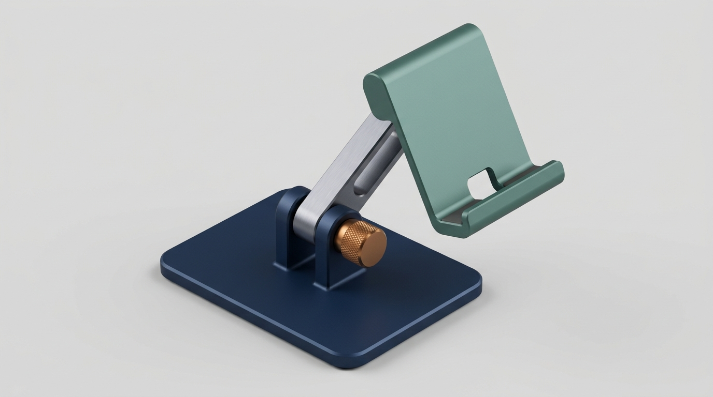
Voici le système complet tel qu'il apparaîtra dans votre onglet Assembly 1 une fois les 4 pièces modélisées et associées par leurs liaisons cinématiques :
Responsable de l'ancrage au sol et du guidage principal :
Responsable de l'interface utilisateur et du pivotement :
• 00 à 15 min : Étape 1 — Création et Partage collaboratif du document Onshape (droits Can edit).
• 15 à 30 min : Étape 2 — Négociation du Contrat d'Interface (cotes communes, tolérances et jeux).
• 30 à 65 min (35 min) : Étape 3 — Modélisation 3D synchrone des pièces (2 pièces chacun).
• 65 à 85 min (20 min) : Étape 4 — Assemblage collaboratif 3D (Assembly) & Test cinématique de pivotement.
• 85 à 90 min (5 min) : Étape 5 — Enregistrement, captures d'écran et auto-évaluation.
Contrairement aux logiciels de CAO traditionnels installés sur un disque dur, Onshape est 100% Cloud. Un seul document accueille les deux élèves en direct, sans jamais écraser le travail de l'autre !
L'Élève A se connecte à son compte Onshape et clique sur Create > Document. Nommez le document :
TP_Collab_FlexDesk_NomA_NomB.
Vous disposez de deux méthodes pour ouvrir la fenêtre de partage :
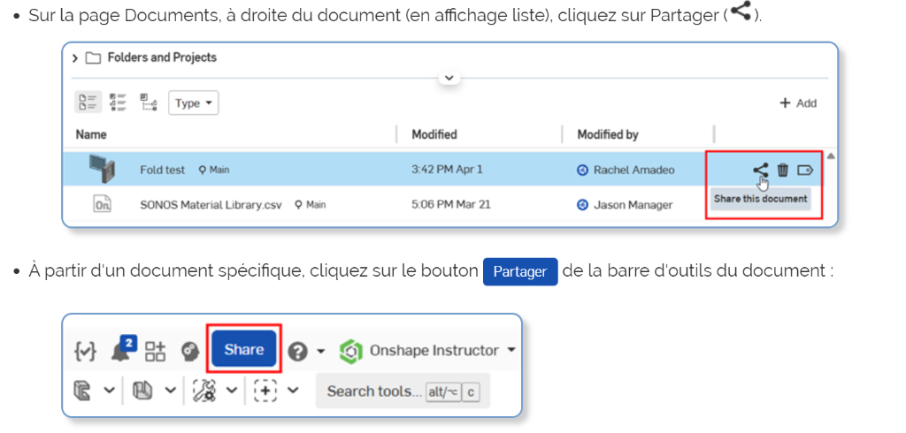
Dans la fenêtre pop-up de partage qui apparaît à l'écran :
Attention : Si vous laissez l'option par défaut Can view (Lecture seule), votre camarade ne pourra pas créer de pièces ! Assurez-vous d'avoir sélectionné Can edit.
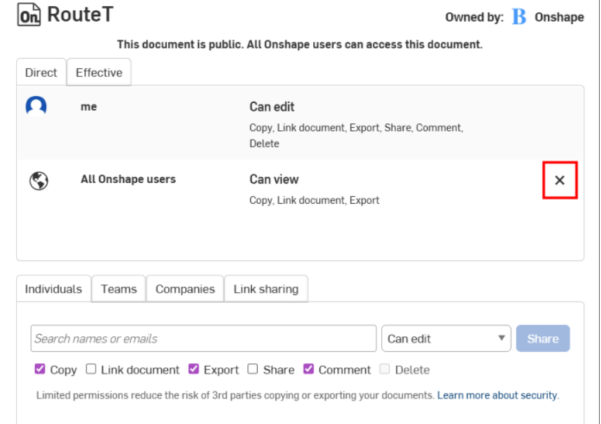
L'Élève B rafraîchit sa page d'accueil Onshape, clique sur la rubrique Shared with me (Partagés avec moi) et ouvre le document.
👉 Observez en haut à droite : les deux avatars (pastilles de couleur) des élèves apparaissent côte à côte. Si l'un sélectionne une face, l'autre la voit s'illuminer en direct sur son propre écran !
Règle d'or de l'ingénierie concourante : On ne lance JAMAIS une modélisation 3D sans s'être mis d'accord sur les zones de contact entre les pièces.
En fabrication réelle (ex: impression 3D FDM ou injection plastique), si un tenon de 15 mm entre dans une rainure de 15 mm pile, les pièces ne s'emboîteront pas à cause des tolérances de fabrication. Il faut prévoir un Jeu Fonctionnel (\(J = \text{Dimension Alésage} - \text{Dimension Arbre}\)).
• Jeu latéral de chape (Liaison Pivot 1 et 2) : Prévoir un jeu entre 0,4 mm et 0,6 mm (ex : bras de 16,0 mm dans chape de 16,5 mm).
• Jeu diamétral de l'axe de rotation : Prévoir un jeu entre 0,3 mm et 0,5 mm entre l'axe et les alésages de passage (ex : axe de Ø7,8 mm dans alésage de Ø8,2 mm).
| Interface mécanique | Concepteur Élève A | Concepteur Élève B | Jeu calculé (J) | Diagnostic de compatibilité |
|---|---|---|---|---|
|
1. Chape Socle / Pied Bras Emboîtement pivot inférieur |
Largeur Chape Socle (\(L_{chape}\)) : mm |
Épaisseur Pied Bras (\(E_{bras}\)) : mm |
J = 0.6 mm | ✅ Excellent (Jeu fonctionnel optimal) |
|
2. Axe moleté / Alésages Guidage en rotation |
Diamètre Alésage Socle & Bras : mm |
Diamètre tige de l'Axe (\(D_{axe}\)) : mm |
J = 0.4 mm | ✅ Excellent (Rotation fluide garantie) |
|
3. Tête de Bras / Berceau Liaison articulée haute |
Épaisseur Tête de Bras (\(E_{tete}\)) : mm |
Écartement Chape Berceau (\(L_{berceau}\)) : mm |
J = 0.5 mm | ✅ Excellent (Emboîtement sans forcer) |
|
4. Logement smartphone Ergonomie d'accueil |
Accord sur le smartphone cible : Épaisseur smartphone avec coque = 12 mm | Largeur passage câble USB-C = 16 mm | Intégré dans le design du berceau (Élève B) | ||
Dans Onshape, pour travailler à deux sans interférer sur l'historique des fonctions :
• Élève A travaille dans l'onglet initial Part Studio 1 (rebaptisé Part Studio - Structure).
• Élève B clique sur le bouton + en bas à gauche et choisit Create Part Studio (nommé Part Studio - Berceau et Axe).
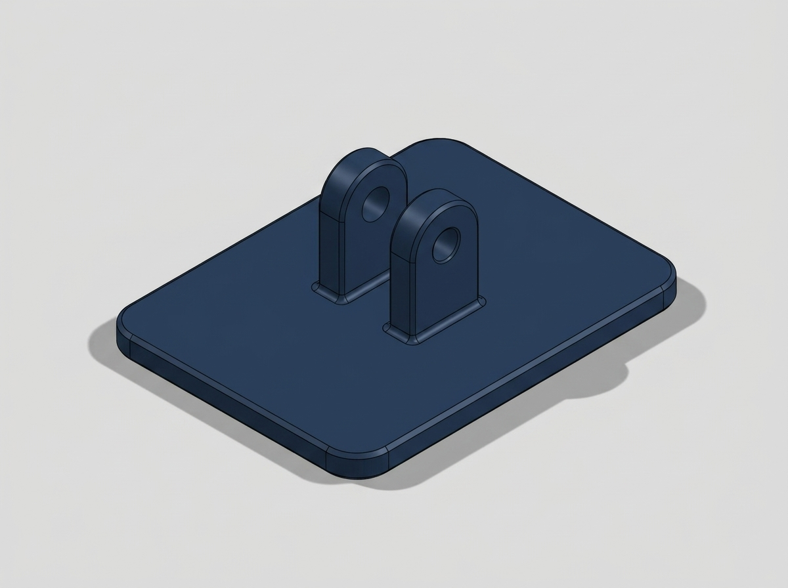
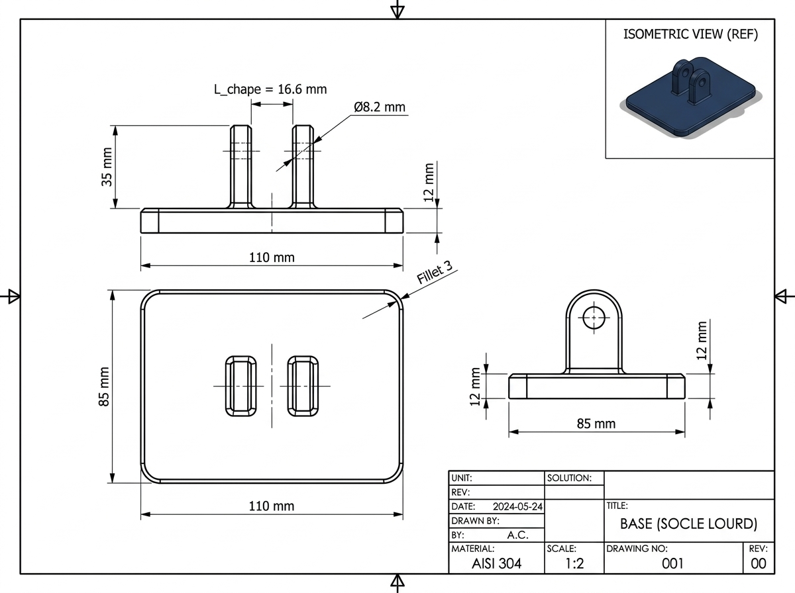
| Élément géométrique | Cote nominale | Caractère de la cote |
|---|---|---|
| Embase rectangulaire | 110 × 85 mm / Ep = 12 mm | Bâti fixe de référence |
| Écartement chape (\(L_{chape}\)) | 16,6 mm (H = 35 mm) | Cote négociée (Jeu latéral \(J_1 = 0,6\) mm) |
| Alésages de passage axe | Ø 8,2 mm (à H = 25 mm) | Cote négociée (Jeu diamétral \(J_2 = 0,4\) mm) |
| Rayons de raccordement | R = 3 mm | Congés d'adoucissement |
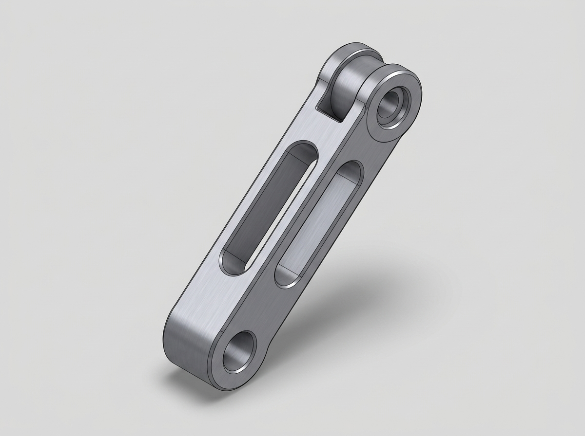
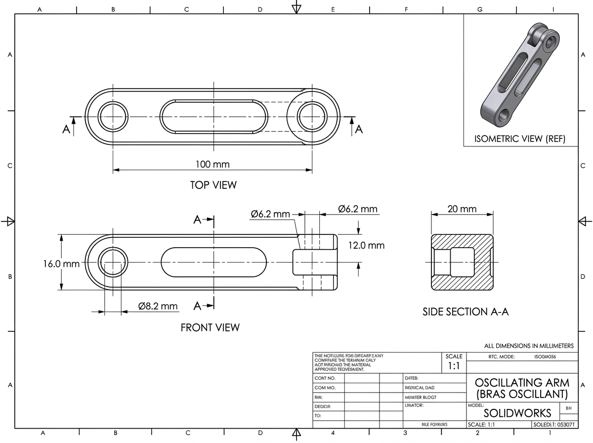
| Élément géométrique | Cote nominale | Caractère de la cote |
|---|---|---|
| Entraxe de bielle | 100 mm | Distance cinématique de levage |
| Pied inférieur (\(E_{bras}\)) | 16,0 mm / Alésage Ø 8,2 mm | Cotes négociées (Chape Socle) |
| Tête supérieure (\(E_{tete}\)) | 12,0 mm / Alésage Ø 6,2 mm | Cotes négociées (Chape Berceau) |
| Corps profilé & évidement | Largeur corps 20 mm / Évidement central | Design & allègement matière |
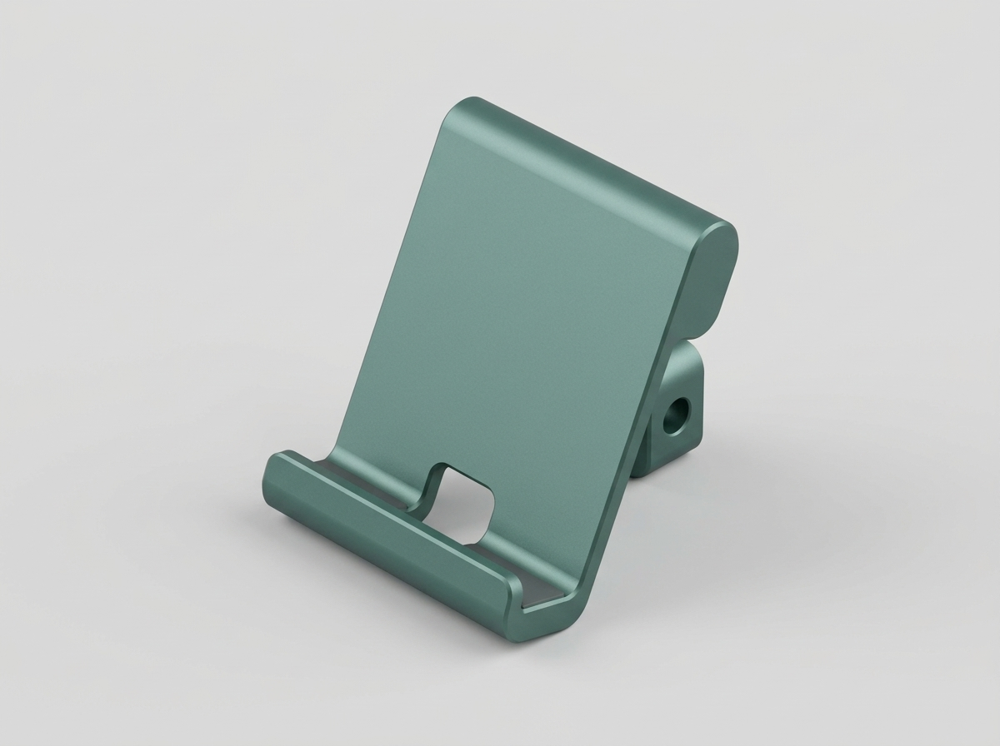
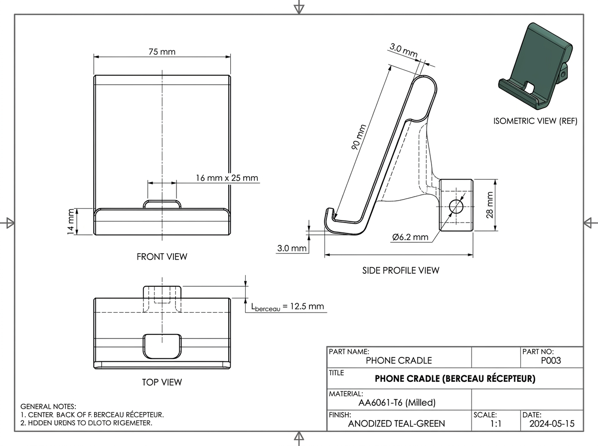
| Élément géométrique | Cote nominale | Caractère de la cote |
|---|---|---|
| Dossier récepteur | H = 90 mm / Largeur 75 mm / Ep = 3,5 mm | Appui dorsal du téléphone |
| Logement smartphone | Profondeur 14 mm / Butée 12 mm | Maintien de smartphones avec coque |
| Passage câble de recharge | 16 × 25 mm (centré) | Dégagement connecteur USB-C |
| Chape arrière (\(L_{berceau}\)) | 12,5 mm / Alésage Ø 6,2 mm | Cotes négociées (Jeu \(J_3 = 0,5\) mm) |
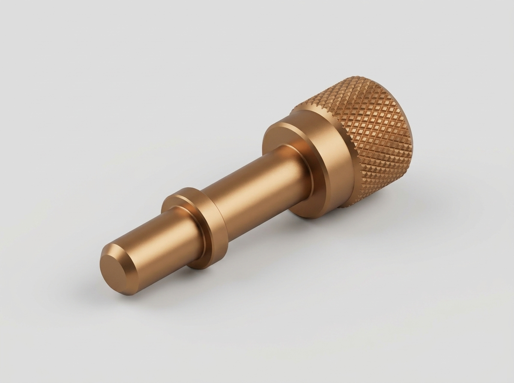
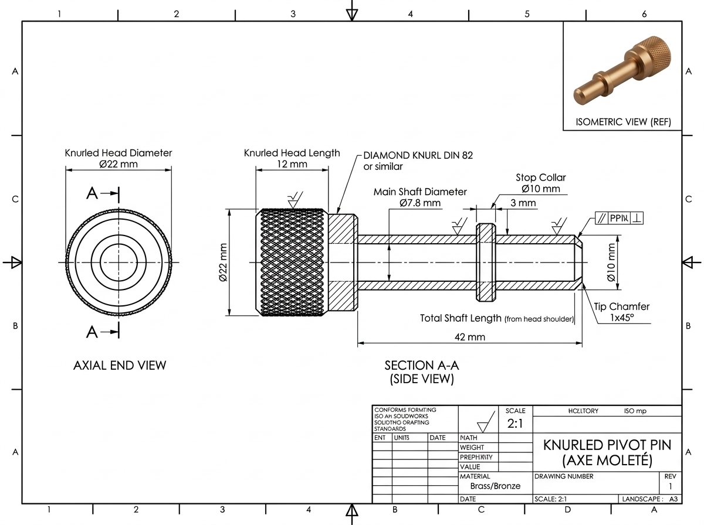
| Élément géométrique | Cote nominale | Caractère de la cote |
|---|---|---|
| Tête moletée de manœuvre | Ø 22 mm / Longueur 12 mm | Moletage croisé ergonomique DIN 82 |
| Épaulement d'arrêt axial | Ø 12 mm / Longueur 2 mm | Face d'appui contre la chape |
| Corps cylindrique (\(D_{axe}\)) | Ø 7,8 mm / Longueur 42 mm | Cote négociée (Jeu pivot \(J_2 = 0,4\) mm) |
| Chanfrein d'entrée | 1 × 45° | Guidage d'insertion au montage |
C'est le moment crucial ! Les deux élèves basculent ensemble sur le même onglet Assembly 1. Grâce à la synchronisation cloud, chaque liaison mécanique posée par l'un est visible et testable instantanément par l'autre !
1. Insertion des pièces : Cliquez sur Insert. Dans la fenêtre, sélectionnez les pièces de Part Studio 1 (Socle et Bras) ET les pièces de Part Studio 2 (Berceau et Axe). Validez avec la coche verte.
2. Fixation du bâti (Indispensable !) : Cliquez avec le bouton droit sur le Socle dans la liste des pièces et sélectionnez Fix (une petite ancre apparaît). Le socle est désormais immobile dans l'espace.
• Choisissez l'outil Revolute Mate.
• Sélectionnez le connecteur central (Mate Connector) du trou inférieur du bras.
• Sélectionnez le connecteur correspondant au milieu des deux alésages de la chape du socle.
• Cochez Limits pour limiter le débattement angulaire entre 0° et 60°.
• Choisissez l'outil Fastened Mate (ou Cylindrical Mate).
• Sélectionnez la face d'appui de l'épaulement de l'axe.
• Sélectionnez la face extérieure de la chape du socle.
• Vérifiez que la tige traverse parfaitement le socle et le bras sans décalage.
• Choisissez l'outil Revolute Mate.
• Reliez le trou supérieur du bras au tenon arrière du berceau.
• Réglez les limites d'inclinaison pour orienter l'écran du smartphone de façon ergonomique face à l'utilisateur.
Comparez votre résultat dans l'onglet Assembly 1 avec le rendu 3D ci-contre :
1. Animation du mécanisme : Dans l'arbre d'assemblage à gauche, faites un clic droit sur Revolute 1 > Animate. Cliquez sur Play : admirez l'inclinaison fluide de votre support articulé !
2. Détection d'interférences : Sélectionnez les 4 pièces, faites un clic droit > Interference detection. Le résultat doit indiquer No interference found. Si une zone rouge apparaît, c'est que vos cotes négociées n'ont pas été scrupuleusement respectées !
Chaque binôme dépose sur Google Classroom son lien de partage Onshape ainsi qu'une capture d'écran 3D de l'assemblage complet en vue isométrique montrant le bon fonctionnement cinématique.
Partage effectif du document avec droits d'édition, synchronisation des deux élèves sans perte de données, travail simultané propre.
Respect strict des cotes négociées, calcul correct des jeux fonctionnels pour éviter les blocages mécaniques ou le flottement.
Esquisses totalement contraintes (traits noirs), utilisation adaptée des fonctions (Extrude, Revolve, Hole, Fillet) pour les 4 pièces.
Socle fixé (Fix), choix pertinent des connecteurs et des liaisons (Revolute Mate), amplitude angulaire réaliste, absence totale d'interférence.